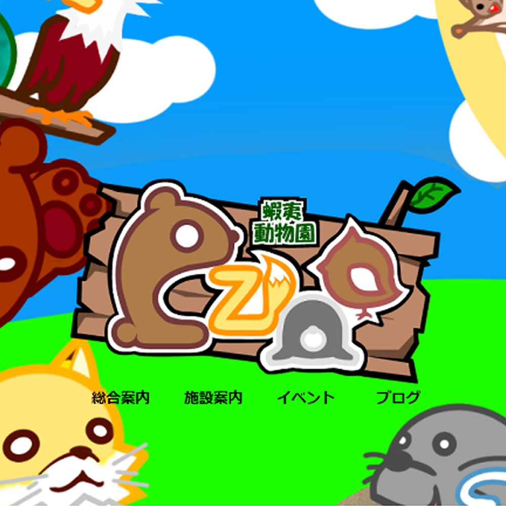

グループワークの作成課題
北海道近辺生息に特化した動物園
３０時間
HTML/CSS/Illustrator/photoshop
在学中のグループワークの課題と一部のコーディングとグラフィック全般を行いました。全体のテーマはアイヌ文化を取り入れた北海度密着型の動物園です ターゲット層は若年層ファミリーで親子で楽しめる雰囲気を意識しました。私はメインはグラフィックを行いバナーやロゴなどもすべて自作しました。コーディングにもごく一部ですが携わりました